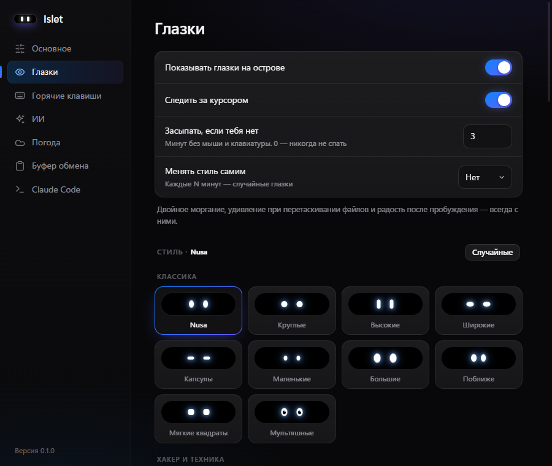
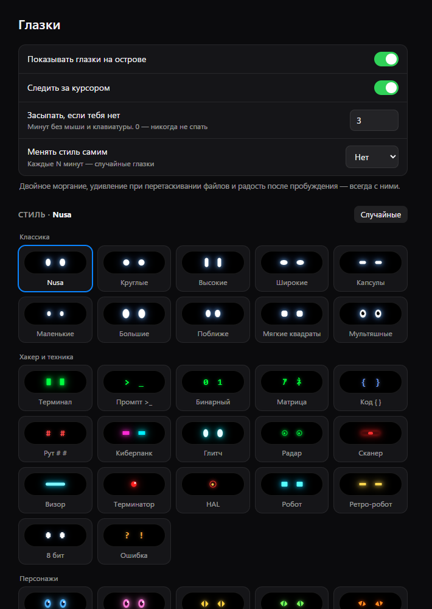
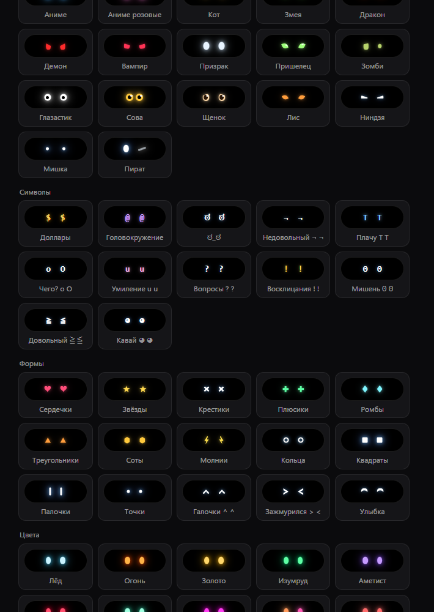
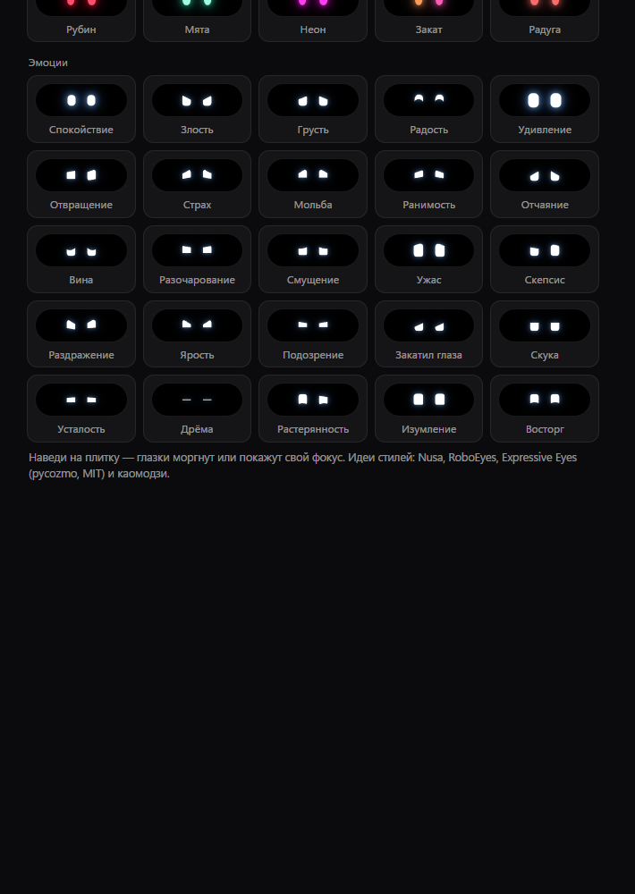

Остров смотрит на тебя
В покое капсула не пустая. Глазки моргают, следят за курсором и меняют настроение. Стиль выбираешь в галерее настроек, а здесь можно попробовать заранее.
Семь характеров
Каждая капсула живая: моргает и смотрит на курсор. Нажми на любую, и большая капсула наверху наденет этот стиль.
В приложении стиль меняется в Настройки → Глазки. Там же моргание и слежение за курсором.
Так это выглядит в настройках



